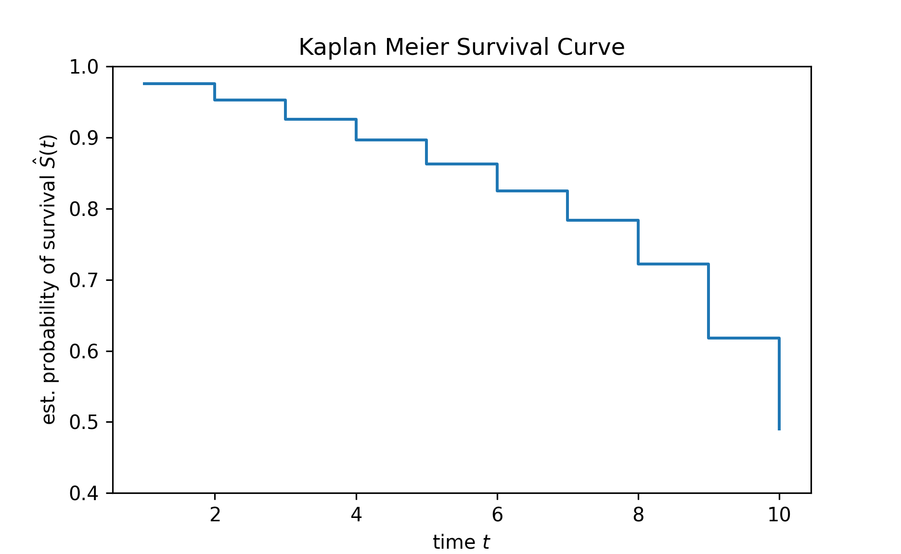
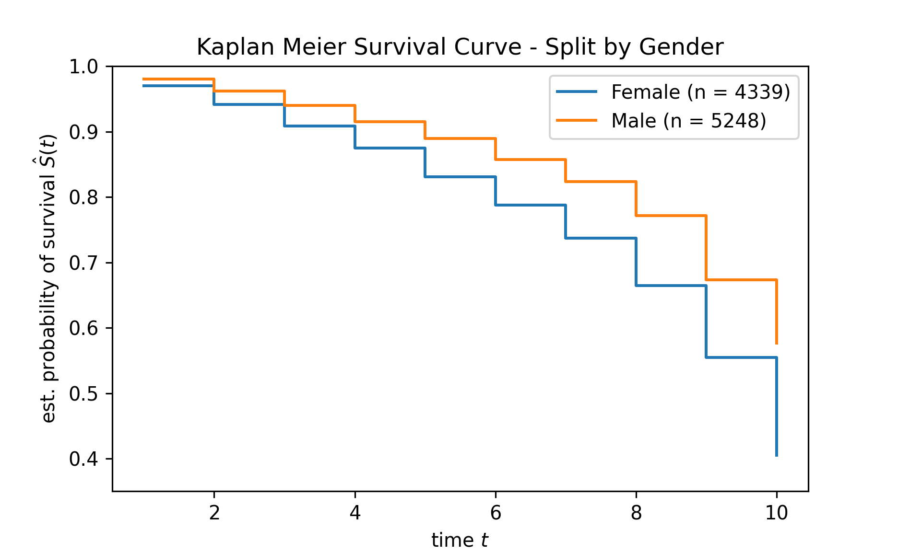
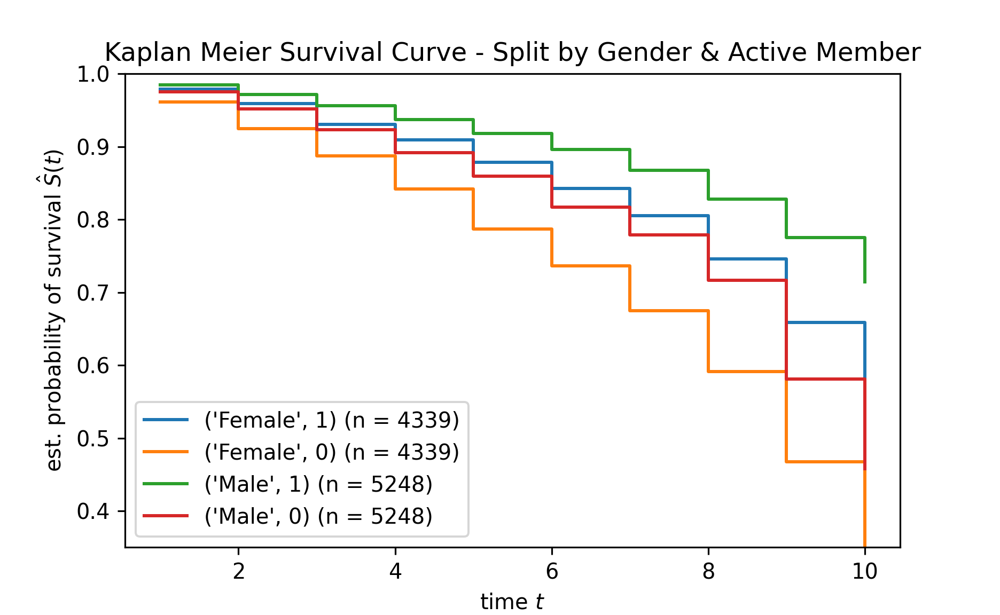
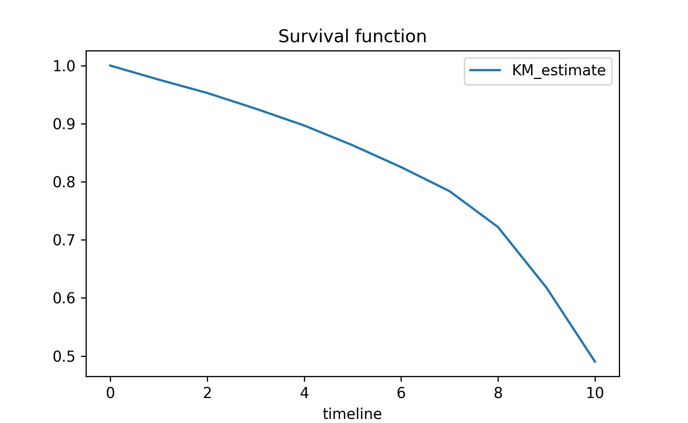
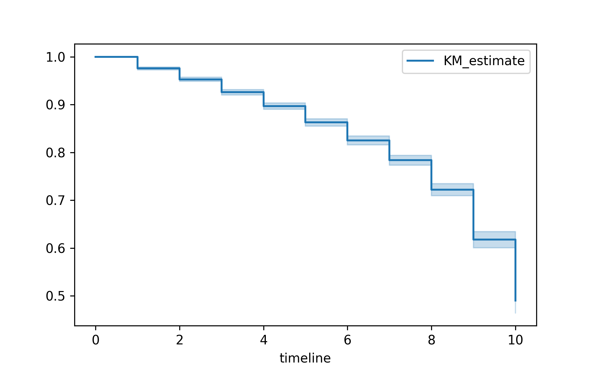

Photo by Tobias Tullius on Unsplash
In this post, I will be exploring how to fit the survival model by using Python packages.
As I have explored the concepts for survival models, so I will skip the discussions on the concepts.
Refer to my previous posts on the concepts of survival models.
Demonstration
In this demonstration, I will be using different approaches to fit survival models.
pacman::p_load(reticulate)Import Data
First, I will import the base Python packages.
import matplotlib.pyplot as plt
import pandas as pd
import numpy as npNext, I will import the data into the environment.
df = pd.read_csv("https://raw.githubusercontent.com/jasperlok/my-blog/master/_posts/2022-09-10-kaplan-meier/data/Churn_Modelling.csv")I will perform some data wrangling.
df = df[df["Tenure"] > 0]
df["CreditScore"] = df["CreditScore"]/100
df["Balance"] = df["Balance"]/10000
df["EstimatedSalary"] = df["EstimatedSalary"]/10000
df["Exited"] = df['Exited'].astype(bool)
#df["IsActiveMember"] = df["IsActiveMember"].astype(bool)
df["Male_ind"] = np.where(df["Gender"] == "Male", True, False)
df.drop(['RowNumber', 'CustomerId', 'Surname'],axis = 1, inplace = True)df.info()<class 'pandas.core.frame.DataFrame'>
Index: 9587 entries, 0 to 9999
Data columns (total 12 columns):
# Column Non-Null Count Dtype
--- ------ -------------- -----
0 CreditScore 9587 non-null float64
1 Geography 9587 non-null object
2 Gender 9587 non-null object
3 Age 9587 non-null int64
4 Tenure 9587 non-null int64
5 Balance 9587 non-null float64
6 NumOfProducts 9587 non-null int64
7 HasCrCard 9587 non-null int64
8 IsActiveMember 9587 non-null int64
9 EstimatedSalary 9587 non-null float64
10 Exited 9587 non-null bool
11 Male_ind 9587 non-null bool
dtypes: bool(2), float64(3), int64(5), object(2)
memory usage: 842.6+ KBMethod 1: Use ‘Scikit Survival’ package
In this first method, I will be using functions from scikit survival package to fit the survival models.
Kaplan Meier
First, I will fit a Kaplan Meier model.
from sksurv.nonparametric import kaplan_meier_estimator
time, survival_prob = kaplan_meier_estimator(
df["Exited"], df["Tenure"]
)Then, I will plot the survival curve.
plt.clf()
plt.step(time, survival_prob, where = "post")
plt.ylim(0.4, 1)(0.4, 1.0)plt.title('Kaplan Meier Survival Curve')
plt.ylabel(r"est. probability of survival $\hat{S}(t)$")
plt.xlabel("time $t$")
plt.show()
We could also produce the survival curves split by variable.
Over here, I split the survival curve by gender.
plt.clf()
for value in df["Gender"].unique():
mask = df["Gender"] == value
time_gender, survival_prob_gender = kaplan_meier_estimator(
df["Exited"][mask], df["Tenure"][mask]
)
plt.step(time_gender, survival_prob_gender, where = "post", label = f"{value} (n = {mask.sum()})")
plt.ylim(0.35, 1)(0.35, 1.0)plt.title('Kaplan Meier Survival Curve - Split by Gender')
plt.ylabel(r"est. probability of survival $\hat{S}(t)$")
plt.xlabel("time $t$")
plt.legend(loc="best")
plt.show()
We can only split by more than one variable.
plt.clf()
for value in df["Gender"].unique():
mask = df["Gender"] == value
for value_2 in df["IsActiveMember"].unique():
mask_2 = df["IsActiveMember"] == value_2
time_gender, survival_prob_gender = kaplan_meier_estimator(
df["Exited"][mask][mask_2], df["Tenure"][mask][mask_2]
)
plt.step(time_gender, survival_prob_gender, where = "post", label = f"{value, value_2} (n = {mask.sum()})")
plt.ylim(0.35, 1)(0.35, 1.0)plt.title('Kaplan Meier Survival Curve - Split by Gender & Active Member')
plt.ylabel(r"est. probability of survival $\hat{S}(t)$")
plt.xlabel("time $t$")
plt.legend(loc="best")
plt.show()
Cox Proportional Hazard
Next, I will fit the cox proportional hazard model.
from sksurv.linear_model import CoxPHSurvivalAnalysisFirst, we will convert the data frame into the necessary format.
df_x = df.loc[:, ~df.columns.isin(['Tenure', 'Exited', 'Gender'])]
# convert the target into a structure array
raw_df_y = df[['Exited', 'Tenure']].to_numpy()
aux = [(e1,e2) for e1,e2 in raw_df_y]
#Structured array
df_y = np.array(aux, dtype=[('Status', '?'), ('Survival_in_days', '<f8')])We will also need to convert the categorical variable into numeric columns.
#categorical_cols = ['Geography', 'IsActiveMember', 'Gender']
categorical_cols = ['Geography']
df_x = pd.get_dummies(df_x, columns = categorical_cols)
df_x.drop(['Geography_France'],axis = 1, inplace = True)Then, I will fit a cox proportional hazard model.
estimator = CoxPHSurvivalAnalysis()
estimator.fit(df_x, df_y)CoxPHSurvivalAnalysis()In a Jupyter environment, please rerun this cell to show the HTML representation or trust the notebook.
On GitHub, the HTML representation is unable to render, please try loading this page with nbviewer.org.
CoxPHSurvivalAnalysis()
Below is how we could extract the coefficients from the fitted model:
pd.Series(estimator.coef_, index=df_x.columns)CreditScore -0.047621
Age 0.046522
Balance 0.019447
NumOfProducts -0.049862
HasCrCard -0.056001
IsActiveMember -0.713006
EstimatedSalary 0.001067
Male_ind -0.369540
Geography_Germany 0.469142
Geography_Spain 0.037222
dtype: float64We can only calculate the C-index by using the function in the package.
from sksurv.metrics import concordance_index_censored
prediction = estimator.predict(df_x)
result = concordance_index_censored(df_y["Status"], df_y["Survival_in_days"], prediction)
result[0]0.7209654995699178Method 2: Use lifelines package
Another popular package to fit the survival model is to use lifelines package.
Kaplan Meier
As usual, I will first fit a Kaplan Meier model.
from lifelines import KaplanMeierFitter
kmf = KaplanMeierFitter()
kmf.fit(df['Tenure'], event_observed = df['Exited'])<lifelines.KaplanMeierFitter:"KM_estimate", fitted with 9587 total observations, 7645 right-censored observations>Then, I will visualize the survival curve.
plt.clf()
kmf.survival_function_.plot()
plt.title('Survival function')
plt.show()
kmf.plot_survival_function()
Cox Proportional Hazard
Next, I will fit a cox proportional hazard model.
from lifelines import CoxPHFitter
coxf = CoxPHFitter()
# convert the categorical variables into numeric variable
categorical_cols = ['Geography']
df_num = pd.get_dummies(df, columns = categorical_cols)
df_num.drop(['Geography_France', 'Gender'],axis = 1, inplace = True)coxf.fit(df_num, "Tenure", "Exited")<lifelines.CoxPHFitter: fitted with 9587 total observations, 7645 right-censored observations>To extract the hazard ratio, we could call .hazard_ratios_ from the fitted model.
coxf.hazard_ratios_covariate
CreditScore 0.952410
Age 1.049302
Balance 1.020603
NumOfProducts 0.950116
HasCrCard 0.942410
IsActiveMember 0.469827
EstimatedSalary 1.001222
Male_ind 0.682115
Geography_Germany 1.629706
Geography_Spain 1.035074
Name: exp(coef), dtype: float64Conclusion
That’s all for the day!
Thanks for reading the post until the end.
Feel free to contact me through email or LinkedIn if you have any suggestions on future topics to share.
Refer to this link for the blog disclaimer.
Till next time, happy learning!

Photo by Markus Spiske on Unsplash